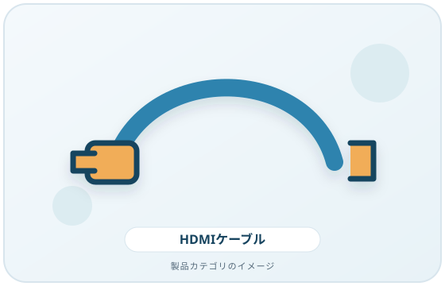
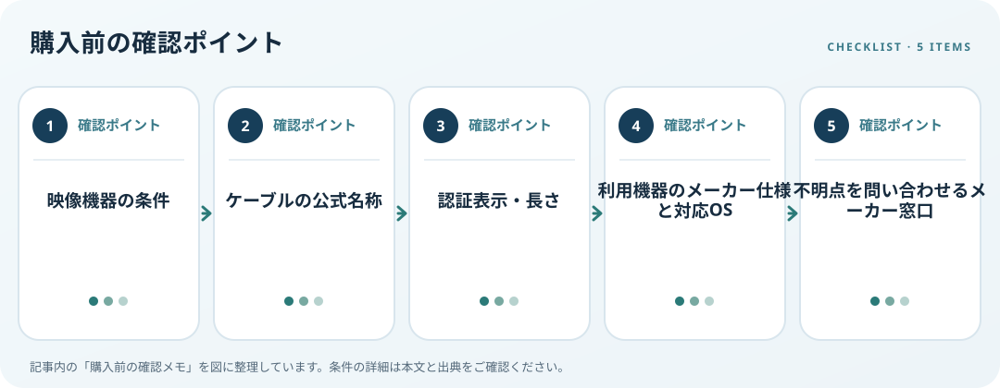

HDMIケーブルを選ぶ際は、端子の形だけでなく、使う映像機能とケーブルの公式名称を照合します。HDMI公式情報にはStandard、High Speed、Premium High Speed、Ultra High Speedなど、用途の異なる区分があります。機器の仕様表にある解像度、リフレッシュレート、HDR等を先に確認します。
画像・ボタンはAmazonアソシエイトリンクです。適格購入により紹介料を得る場合があります。

Amazon.co.jpで「HDMI ケーブル 認証」を探す ↗

対応条件を仕様で確認
販売ページの「高性能」などの宣伝語だけで判断せず、製品包装やケーブルに表示された公式ケーブル名を探します。Premium High Speedの認証プログラムでは追加試験と認証ラベルが案内されています。ラベルや公式名称が確認できない場合は、商品説明の曖昧な表現を規格名と同じものとして扱わないようにします。
利用環境・設置条件を確認
出力機器とディスプレイの間にAVアンプ、変換器、ドックがある場合は、それぞれの映像対応も確認します。設置では端子間の配線経路を測り、必要な長さと取り回しを考えます。ケーブル単体で接続機器の機能が有効になるわけではないため、仕様が不明なら機器メーカーに確認してください。
購入前の確認メモ
- 映像機器の条件
- ケーブルの公式名称
- 認証表示・長さ
- 利用機器のメーカー仕様と対応OS
- 不明点を問い合わせるメーカー窓口
記事は出典の公開情報を確認手順に整理したもので、製品の使用・実測・ランキング・価格・在庫の調査は行っていません。購入時には各メーカーの最新情報をご確認ください。
出典
- HDMI Cables — HDMI.org（確認日: 2026-10-10）
- Premium High Speed HDMI Cable — HDMI.org（確認日: 2026-10-10）